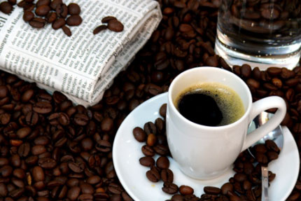
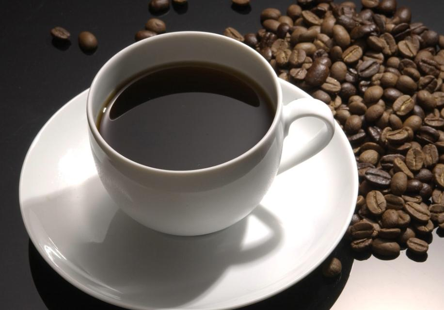
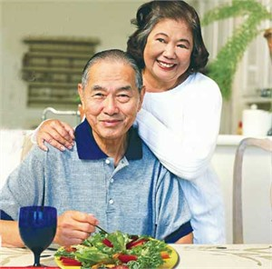

10 lợi ích chính của cà phê nguyên chất đối với sức khỏe con người
Ngoài tác dụng giúp chúng ta tỉnh táo, tăng cường các hoạt động về tâm thần và trí tuệ, tạo sự sảng khoái tích cực về tâm lý, làm chúng ta dễ tính hơn. Cà phê còn có 10 ích lợi chính đồi với sức khỏe như sau:
1. Cà phê chứa nhiều chất chống ôxy hóa: Hạt cà phê chứa một số chất khoáng như Mg, Ca, K và hàm lượng cao những hợp chất polyphenols là những chất chống oxy hoá hữu ích. Chất chống oxy hoá giúp trung hoà những gốc tự do để ngăn chặn quá trình hư hại tế bào và DNA trong các loại bệnh tim mạch, ung thư và quá trình lão hoá, khiến lâu già.
2. Giúp giảm cân: Cà phê giúp bạn giảm béo và có thân hình thon gọn hơn. Là thức uống có lượng calo thấp, sử dụng cà phê vào buổi sáng có tác dụng rất tốt bởi nó làm tăng quá trình trao đổi chất, giúp đốt cháy calo.
3. Cà phê đối với hệ tim mạch: Là thực phẩm giàu chất chống ôxy hóa tự nhiên, cà phê có tác dụng giữ cho máu sạch, ngăn ngừa bệnh cao huyết áp và bệnh tim mạch. Cà phê chứa các hợp chất phenol với tính chống oxy hóa có thể ngăn ngừa xơ vữa động mạch. Một số lợi ích cho sức khỏe có thể vươn xa đến ngừa tai biến mạch máu não.
4. Cà phê đối với bệnh đái tháo đường: Tờ the Annals of Internal Medicine cho biết uống cà phê liên quan nghịch với viêm và rối loạn chức năng nội mô. Cà phê có thể làm giảm nguy cơ bệnh đái tháo đường. Các hợp chất điều tiết insulin có trong cà phê sẽ giúp ngăn chặn bệnh đái tháo đường tuýp II. Theo một nghiên cứu ở Singapore Chinese Health Study cho biết uống từ 4 cốc cà-phê trở lên hàng ngày giảm 30% nguy cơ bệnh đái tháo đường.
5. Cà phê ngừa ung thư: Tạp chí chuyên đề JNCI của Viện Ung thư quốc gia Mỹ số ra đầu tháng 5/2011 đăng tải nghiên cứu do các chuyên gia ĐH Harvard, Mỹ thực hiện thì những người uống cà phê có hàm lượng cafein thấp điều độ và đều đặn sẽ giảm được tới 50% nguy cơ mắc bệnh ung thư, nhất là ung thư vú, ung thư gan, tiền liệt tuyến, trực và đại tràng.

6. Giảm thiểu bệnh Parkinson: Một nghiên cứu dài 30 năm của các nhà khoa học trường Đại học Nam Florida cho thấy những người có thói quen uống cà phê thì có rủi ro mắc bệnh Parkinson thấp hơn so với người không uống hoặc uống ít. Các nhà khoa học trường Đại học Kuopio, Phần Lan, Viện Karolinski ở Stockholm, Thụy Điển và Viện Sức Khoẻ Quốc Gia Phần Lan cũng cho biết những người trung niên thường dùng cà phê với lượng trung bình từ 3 đến 5 ly mỗi ngày có thể làm giảm nguy cơ bị bệnh suy giảm trí nhớ ở tuổi già.
7. Ngừa bệnh xơ gan: Một số nghiên cứu được thực hiện gần đây cho thấy những người uống cà phê thường xuyên và điều độ, giảm được tới 80% khả năng phát triển bệnh xơ gan.
8. Giảm bệnh hen suyễn: Thực tế, các loại thuốc trị hen suyễn đều có chứa caffeine vì vậy, uống cà phê điều độ có tác dụng tích cực trọng việc ngăn ngừa căn bệnh này.
9. Lợi tiểu: Cà phê không chỉ được xem là thức uống lợi tiểu mà còn có tác dụng sạch dạ dày và hệ tiêu hóa. Tuy nhiên những người có vấn đề về dạ dày, dễ phản ứng với cà phê thì không nên uống nhiều cà phê.
10. Giảm nguy cơ mắc bệnh sỏi mật: Theo nhiều nghiên cứu lâm sàng, cà phê có tác dụng giảm cholesterol trong mật dạ dày, giúp ngăn ngừa nguy cơ tạo sỏi túi mật.
Nguyễn Thanh Tình - PHP39 (Sưu tầm)